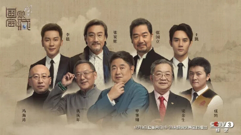

In the winter of 2015, the giant conscience film "I am in the Forbidden City to repair cultural relics" attracted the attention of the whole country to the national historical relics. This winter we ushered in a national wind culture variety "National Treasure" with a score of 9.4!  On December 3, CCTV launched the large-scale Wenbo exploration program “National Treasure”, which was first broadcast. The first phase of the opening ceremony, No. 001 commentator National Uncle gave the program positioning. “We are a young program, how young we are. It is about five thousand years!" This is a magnificent "special exhibition" about the 9 major museums and 27 treasures of the town hall. There are 9 museums including the Palace Museum. Each museum recommends 3 treasures of the town hall. Each treasure has its own star "National Treasure Guardian", who will tell the past and present of the "Great Powers". Finally, the audience will vote for the selection. The winning cultural relics in each period can be accommodated in the National Treasure Exhibition of the Forbidden City. In the first episode, the Palace Museum selected three national treasures: Wang Ximeng's "Thousand Miles of Rivers and Mountains", "Chinese First Antiquities" stone drums, and various glaze bottles with the name "porcelain mother". Its national treasure is so strong, and the star guest of the "National Treasure Guardian" is not vegetarian. They are responsible for the story of the origin of the national treasure, and this acting is also very hard. Liang Jiahui claimed to be a "half of the Forbidden City." He interpreted Sima Guang as the "National Treasure Guardian" and described the predecessor legend of the "Chinese First Antiquities" Shigu: Shi Guwen described an unknown history before Qin Shihuang unified China. It is the earliest stone carving poem in China, creating a miracle in the history of Chinese cultural relics. It is the transitional sign of the acceptance of the scriptures under the Jinwen. Song Chen, played by Li Chen, tells the story behind Wang Ximeng's "A Thousand Miles of Rivers and Mountains". Wang Ximeng was born in the golden age of Chinese landscape painting. He was personally mentioned by Huizong of the Song Dynasty. With his talents for painting and unremitting efforts, he painted the most famous volume of the thousands of miles in the history of Chinese painting at the age of eighteen. When the program was broadcast, it caused a hot discussion, but it was Wang Kai, the "national treasure guardian" of various porcelain glaze bottles. In the program, he was incarnate in Qianlong, and he talked to Yongzheng, Wang Xizhi and Huang Gongwang. The name of this national treasure spurred "a variety of glaze bottles", also known as "porcelain mother", because it is the largest porcelain in China's official kiln porcelain, the most glazed variety, the most complicated porcelain. On its body, it gathered the 17 most representative glazes from the Song Dynasty to the Qing Dynasty. Its birth marks the culmination of ancient Chinese porcelain making. And this "painting style" is also very consistent with the previous, Qianlong has been spit out the "farm music aesthetic", the official Tucao is the most deadly. Despite the categorization, the capricious Qianlong still made a variety of glaze bottles. Wang Kaidai Qianlong said his heart: "I just want to show off, I am dazzling with the craftsmen of Jingdezhen. I am dazzling with the prosperity of the Qing Dynasty!" Looking at this magnificent scene and the bloody Qianlong, many netizens were also Qianlong. Impressed. After the program was broadcast, netizens became more and more fond of this national treasure, and named it "The most loved by the Emperor Qianlong. The nickname of the porcelain mother. The craft is super difficult. The Qigong Zhengzheng. The spicy eye Huang Gongwang. The speechless Wang Xizhi. One piece · various glazes · big bottles." Zhang Wei, the volunteer lecturer of the Forbidden City, later introduced that this variety of glaze bottles has 15 decorative layers, 17 different glazes, high-temperature glaze, and low-temperature glaze. If the average firing power of each glaze layer is 70%, then the large porcelain bottle with 17 glazes is only 0.002326. The volunteer commentator who claims to be "porcelain can't ask" served in the Forbidden City for 5 years. However, when it comes to various glaze bottles, he is still full of enthusiasm and awe. In addition to the actors' "scene reappearance", the story of ordinary people in "National Treasures" is even more touching. For example, the typical "Forbidden City" Liang Jinsheng, who together with Liang Jiahui, promoted the guardian of Shigu. Starting from his high-grandfather, a family of several generations served in the Forbidden City. He also worked in the Forbidden City for 38 years, which is worthy of the name. "The Forbidden City family." The "Thousand Miles of Rivers and Mountains" volume is based on mineral pigments such as azurite and stone green. Its characteristics and texture determine the preservation of the painting very difficult, and countless cultural enthusiasts have also invested in research. Among them, Feng Haitao of the Central Academy of Fine Arts studied the green color of the "A Thousand Miles of Rivers and Mountains" volume for four years, and it took two months to copy one tenth of the "Thousand Miles of Rivers and Mountains" volume; the intangible cultural heritage "Jiang Si Xutang" Qiu Qingnian, the only descendant of Chinese painting paint making skills, is also a guest studio, which is the secret of the audience's three-dimensional interpretation of mineral pigments to make the color "zero millennity". The director of the show said: After watching the show, you will have a sense of pride. From the 9 major museums to the 27 stars "National Treasure Guardian", each national treasure is a wonderful work, and each of the past and present life behind it is unforgettable, so hurry up! Go to understand, go to the sentiment, go to see the national treasure to live!